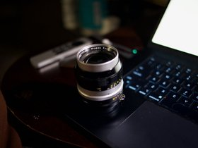
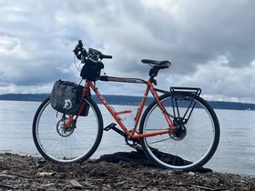

-
 15mm_voigtlander_helair
15mm_voigtlander_helair
-
 23mm_Voigtländer_nokton
23mm_Voigtländer_nokton
-
 35mm_voigtlander_ultron
35mm_voigtlander_ultron
-
 65mm_Voigtländer_lanthar
65mm_Voigtländer_lanthar
-

105mm_2.5_nikon -
 2025
2025
-
 astrophotography
astrophotography
-

bicycles -
 botanical
botanical
-
 buddhism
buddhism
-
 cats
cats
-
 create
create
-
 max
max
-
 shane
shane
-
 sunstars
sunstars
-
 wardrobe
wardrobe
-
 woodland
woodland

shane null's photos
| Key / Shortcut | Action |
|---|---|
| ← (Left arrow) | Go to previous picture in album |
| → (Right arrow) | Go to next picture in album |
| f | Fullscreen toggle |
| esc | return to album |
my photography story
I am addicted to modern classics geared for simplicity and travel.
A huge mistake people usually ignore is that corporations unnecessarily change things just for profit this is the majority of our waste.
Really I don't think we need %90 of what we create because nature does everything better than we do and always will.
A lack of appreciation for nature is a big reason why it is disappearing.
That is why I hike and bicycle to see nature and take photos i want to preserve something that is dying.
For my birthday in 2025 I got my first real camera the Nikon Zfc
Before this I used my phone or action cameras.
My camera is a retro design and usually I use vintage style manual Voigtlander lenses that have focus assist.
The camera has traditional film dials like iso exposure shutter and even has a mechanical shutter.
This gives me the illusion that I am in control and not being lazy having a flimsy machine do everything for me.
Many people in my family were into photography early I wish I paid attention and got into it earlier.
Now I realize why.
I also have a retro motorcycle, wardrobe and classic dutch bicycle.
I enjoy simple things that respect the old ways sometimes things change that had no good reason to change.
I could do without the modernity but my retro items are a mix of old & new ways.
My Suzuki motorcycle is a retro modeled after early Japanese but with modern fuel injection and automatic throttle compensation.
I am also into nomadic folding travel gear like a Journeyman folding guitar that has it's own an rolling overhead suitcase.
My folding travel bicycle is also a traditional old design a Bike Friday hand made in Oregon.
It has a bicycle trailer that can hold the bicycle & trailer wheels for travel.
Years ago I shifted all of my decisions to gear toward a simplified almost all human powered nomadic
I will likely always have my camera with me when I travel now.
This is my legacy, a visual record of my travels, an average person's legacy lasts 50-100 years and usually only within their family.
I have many more photos on backup drives I'll attempt to organize them and decide which to make public.
They obviously won't fit here.